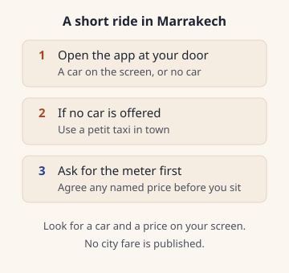

Uber and ride apps in Marrakech
Open Uber and look for a car and a price. No Marrakech fare is published. For a short hop, ask a petit taxi for the meter.
Open Uber where you have a signal, and count on a car only when your screen shows one, with a price, before you move.
The app is offered in Marrakech and Casablanca, only with licensed transport vehicles, as UberX and UberXL Sources disagree Sources. The city lists do not name Morocco, Maroc, Marrakech or Casablanca Sources disagree Sources.
Those pages give no fare Sources disagree Sources, and they are dated 27 November 2025 Sources disagree Sources.
Careem, inDrive and apps like them are not confirmed for a pickup in Marrakech.
For a short hop, take a petit taxi and ask for the meter before you get in. City taxi rates are regulated and taxis have meters Source-checked 26 Oct 2026 Sources.
No city fare is published. The steps are on Marrakech petit taxis. The airport ride, with its day and night figures, is Marrakech airport to the medina.
Last updated 27 Oct 2026.
Written by Omar Oujoud in Casablanca. Research drafting is AI-assisted; observations are recorded in person. How we check
Jump to what’s still being checked · sources
How we checked
The English and French newsroom pages were both read on the review date. They agree on the two cities, on licensed transport vehicles, and on UberX and UberXL. The English opening line says the app will be available that day Sources disagree Sources. The French opening line says the app is already reachable Sources disagree Sources. English spells Marrakesh in one line and Marrakech in another. French spells Marrakech. Both newsroom pages name cashless payment as a feature and do not say cash is refused Sources disagree Sources. Neither page names the airport, a dirham fare, Careem or inDrive.
The English and French city lists were read the same day. The places listed do not include Morocco, Maroc, Marrakech or Casablanca. The newsroom and the city lists disagree. That is why the Uber lines on this page are marked as a disagreement, not as a settled city list.
The tourism ministry page on tourist road transport was read in French. No English version of that page was found. An Arabic address is linked from the French page and was not used. The page links a specifications PDF. Article 4 requires a personal approval from the transport commission and a special authorization card for each vehicle Source-checked 27 Oct 2026 Sources. Those approvals last 7 years Source-checked 27 Oct 2026 Sources. The document replaces the specifications signed on 5 October 2012 Source-checked 27 Oct 2026 Sources, and it requires a minimum fleet Source-checked 27 Oct 2026 Sources. That fleet duty does not apply to operators already working before the specifications of 5 October 2012 Source-checked 27 Oct 2026 Sources. The page and the PDF do not name a ride app, a fare, or a pickup point Source-checked 27 Oct 2026 Sources. Uber's phrase about licensed vehicles is not treated as this approval. The two pages do not say they are the same thing.
The transport ministry regulations page linked from that ministry page did not open. A search on the justice ministry portal for the 1963 road-transport dahir returned no document, as already noted on the petit-taxi page.
The meter line is the national tourist office, English and French, already used on the petit-taxi guide. On this reading that site did not open past its security check, so the meter line was not read again. The French page does not say taxis have meters Source-checked 26 Oct 2026 Sources. The Marrakech tourism council pages, read in French and in English, name taxi stations and do not name a ride app. Nothing on this page was seen at a rank.
Two of the three press pages behind the earlier ministry record opened on this reading. They say the ministry is not the authority for app-based urban transport (the Interior Ministry is) Unconfirmed Sources and that road-transport law has no provision for such apps Unconfirmed Sources. They do not say that carrying passengers without a transport licence, or in a private car, is an offence. The third press page did not open. That offence wording is not stated as a fact here.

At a glance
Open the app and look for a car and a price. If nothing is offered, use a petit taxi and ask for the meter. No city fare is published. Airport day and night figures stay on Marrakech airport to the medina.
| Detail | Uber's own pages | A short hop in town | Tourist-transport rules |
|---|---|---|---|
| Where | is offered in Marrakech and Casablanca, only with licensed transport vehicles, as UberX and UberXL Sources disagree Sources | rates are regulated and taxis have meters Source-checked 26 Oct 2026 Sources | do not name a ride app, a fare, or a pickup point Source-checked 27 Oct 2026 Sources |
| The other page | City lists do not name Morocco, Maroc, Marrakech or Casablanca Sources disagree Sources | French page does not say taxis have meters Source-checked 26 Oct 2026 Sources | a minimum fleet Source-checked 27 Oct 2026 Sources |
| Fare | no fare Sources disagree Sources | Not yet confirmed | do not name a ride app, a fare, or a pickup point Source-checked 27 Oct 2026 Sources |
| Airport | Neither page says whether a car may collect a rider at Marrakech Menara airport Sources disagree Sources | Not yet confirmed | Not yet confirmed |
| How long | Newsroom date 27 November 2025 Sources disagree Sources | Not yet confirmed | Approvals last 7 years Source-checked 27 Oct 2026 Sources |
Step by step
Our advice: try the app only after you can see a car and a price on your own screen. If the screen stays empty, walk to a petit taxi and ask for the meter.
- Open Uber where you have a signal, and enter the trip before you leave that spot. The app is offered in Marrakech and Casablanca, only with licensed transport vehicles, as UberX and UberXL Sources disagree Sources. The city lists do not name Morocco, Maroc, Marrakech or Casablanca Sources disagree Sources. If no car is offered, you do not have a ride yet.
- If a price appears, that price is the offer in front of you. The pages give no fare Sources disagree Sources. Decide before you get in. Both newsroom pages name cashless payment as a feature and do not say cash is refused Sources disagree Sources. Carry dirham notes for a taxi anyway.
- The pages describe the cars as licensed transport vehicles. That is not the same thing as the tourist-transport rules, which require a personal approval from the transport commission and a special authorization card for each vehicle Source-checked 27 Oct 2026 Sources. Those rules do not name a ride app, a fare, or a pickup point Source-checked 27 Oct 2026 Sources.
- For a short hop, use a petit taxi. Name the destination, then ask for the meter, before any bag goes in the boot. The steps, the station names and the night gap are on Marrakech petit taxis. When a meter is on, the order of 26 July 2012 Source-checked 26 Oct 2026 Sources says it should calculate and display the price from the distance, the time, or both Source-checked 26 Oct 2026 Sources. It does not give the Marrakech rate.
- Stations the tourism council names are near the Koutoubia, at Sidi Mimoun and at Bab Doukkala Source-checked 26 Oct 2026 Sources. A shared car to another town leaves once the car is full Source-checked 26 Oct 2026 Sources. Say you are staying in town if that is the car waiting.
- Pay a taxi in dirhams. If you have just landed, change a little with Cash and ATMs at Marrakech airport before you leave the hall. A phone line is SIM card at Marrakech airport.
Phrases, if you need them:
- Le prix sur l'application, avant de monter, s'il vous plaît. The price on the app, before I get in, please.
- Le compteur, s'il vous plaît, avant de partir. The meter, please, before we leave.
- من فضلك، العداد قبل الانطلاق. The meter, before we set off.
The edge case
You land at night, or the app shows no car. Neither page says whether a car may collect a rider at Marrakech Menara airport Sources disagree Sources. The airport ride, including the day and night figures, is Marrakech airport to the medina. Do not reuse those figures for a hop across town. No hour is published for a night rate on a city taxi. After dark, still ask for the meter. If a flat price is named, decide before you sit down.
Ramadan is not mentioned on the newsroom pages or on the taxi lines used here. A day when the taxis stop is not mentioned either.
Our advice: if the app offers nothing, leave it. Use the petit taxi, and keep the airport page for the airport ride only.
What to watch for
Our advice: a price you can read before you commit is the whole offer. A higher figure than you hoped for is the price you were shown.
- Two Uber pages. One names Marrakech. The city lists do not. The note is dated 27 November 2025 Sources disagree Sources. It does not say a car is waiting on the day you land.
- Two spellings, two tenses. English uses Marrakesh and Marrakech on the same page, and says the app will be available that day. French uses Marrakech, and says the app is already reachable.
- Do not merge the documents. Licensed transport vehicles on the newsroom page are not the personal approval and the per-vehicle card in the tourist-transport rules. Those rules also require a minimum fleet Source-checked 27 Oct 2026 Sources. That duty does not apply to operators already working before the specifications of 5 October 2012 Source-checked 27 Oct 2026 Sources. Neither page says the cars hold that card.
- Careem, inDrive, and apps like them. They are not named on the newsroom pages, the city lists, the tourist-office pages or the specifications. Whether one can collect you in Marrakech is not confirmed.
- Cashless is named, cash is not ruled out. Both newsroom pages name cashless payment as a feature and do not say cash is refused Sources disagree Sources. Carry dirham notes for a petit taxi anyway. Cash and ATMs at Marrakech airport is the page for the hall.
- Three rides, three prices. An app trip, a metered hop in town, and the airport taxi. The airport figures stay on Marrakech airport to the medina. The city meter rate is not published. Marrakech petit taxis is the page for the hop.
- The walk at the end. Agree the stop before you set off. The first-visit city page is Your first Marrakech trip. A fare you write down at the kerb belongs in the fare log. There are no rows yet.
Still being checked
Not yet confirmed, so not stated as fact on this page:
- Whether the Uber app offers a car in Marrakech on the day you land. The newsroom and the city lists disagree, and the newsroom date is 27 November 2025 Sources disagree Sources.
- A dirham fare for an Uber trip inside Marrakech. The pages give no fare Sources disagree Sources.
- Whether an Uber car may collect a rider at Marrakech Menara airport. Neither page says whether a car may collect a rider at Marrakech Menara airport Sources disagree Sources.
- Whether Careem, inDrive or a similar app can collect a rider in Marrakech. No page read for this guide names them.
- Whether a foreign phone number is enough to request a car. The newsroom pages do not say.
- The statement that carrying passengers without a transport licence, or in a private car, is an offence. That wording was not on the two press pages that opened. The third press page did not open. The transport ministry site did not open, and the justice portal did not return the dahir.
- Whether the cars described as licensed transport vehicles hold the personal approval and the per-vehicle card in the tourist-transport rules. The documents do not say so.
- The pickup charge, the price per kilometre and the hour a night rate starts, for a petit taxi that stays in Marrakech.
- Whether a ride from an app may enter the medina lanes, and where it is expected to stop.
- A fare written down at the kerb, with the date, for the fare log.
Next on your route.
Each guide covers one step of the journey.
Sources for this page
Every fact on this page shows when it was checked and links here to its source. What the badges mean.
- Uber newsroom and Uber city lists: UBER, UBER, page 2, UBER, page 3, UBER, page 4. Reviewed 27 Oct 2026.
- City taxi meters on the national tourist office site: Visit Morocco, Visit Morocco, page 2, Visit Morocco, page 3, Visit Morocco, page 4. Reviewed 26 Oct 2026.
- Specifications for tourist road transport: Mtaess, Mtaess, page 2. Reviewed 27 Oct 2026.
- Ride apps and the law: TelQuel, Médias24, H24info. Reviewed 30 Sep 2026.
- What a taximeter is, in the 2012 industry order: Mcinet. Reviewed 26 Oct 2026.
- Taxi stations and collective taxis on the tourism council pages: Visit Marrakech, Visit Marrakech, page 2. Reviewed 26 Oct 2026.